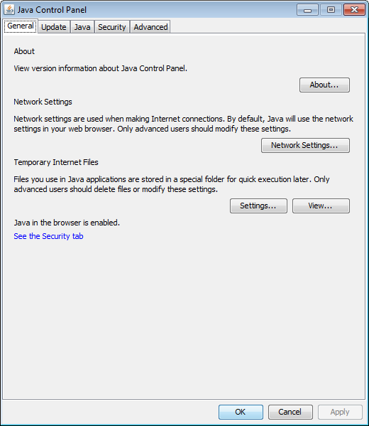
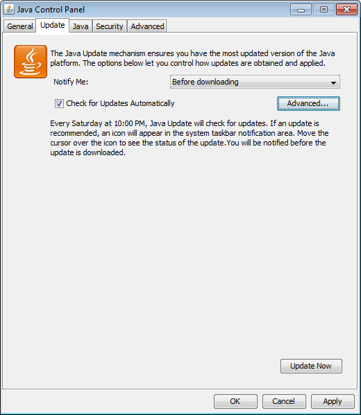
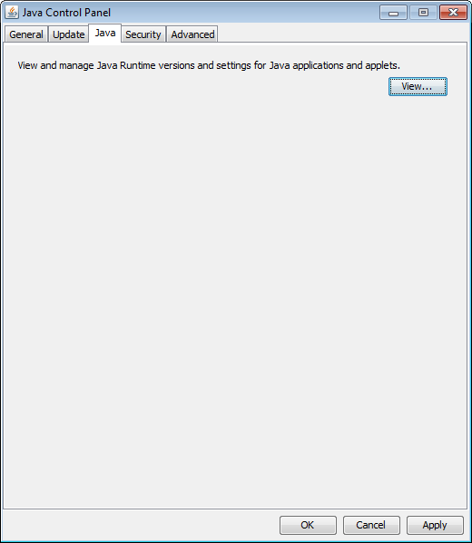
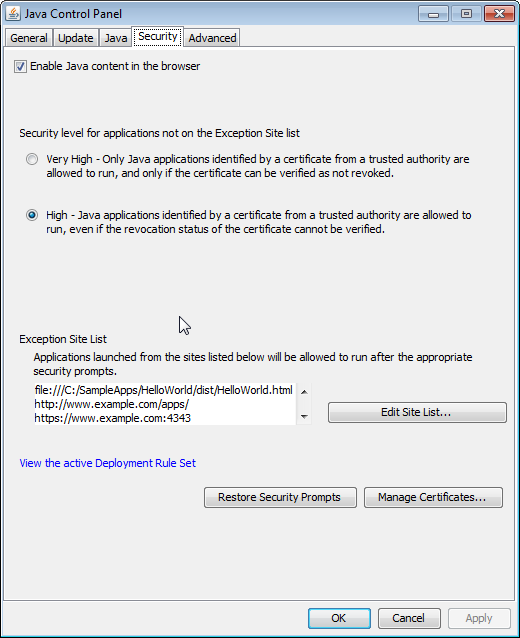
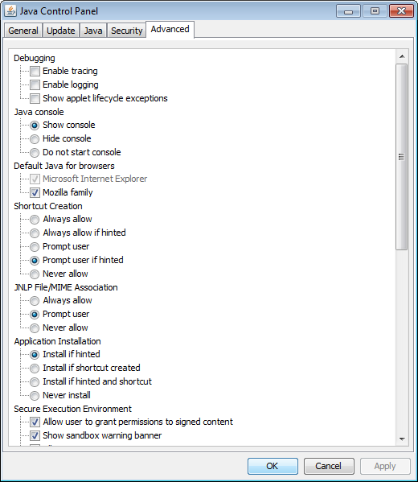
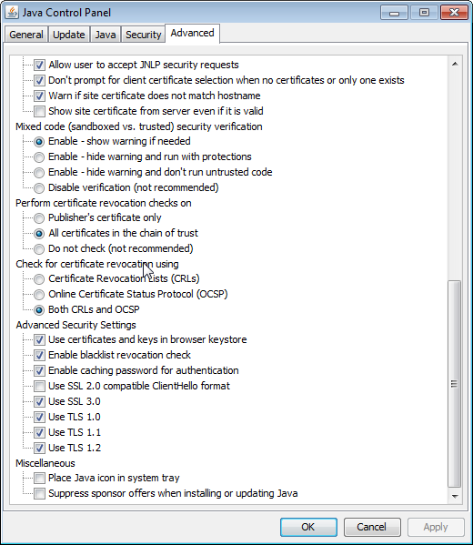

This topic describes the Java Control Panel, which is used to control how Java and JavaFX applications that are embedded in a browser or are launched from a browser run on your computer. The settings in the Java Control Panel are not used by standalone and self-contained applications.
The Java Control Panel provides the following capabilities:
View and delete temporary files used by the Java Plug-in, which runs Java applications that are embedded in a browser, and by Java Web Start, which enables you to run Java applications over the network.
Update your version of the Java platform so that you always have the latest Java Runtime Environment (JRE).
Set runtime parameters.
Manage certificates.
View an active deployment rule set.
Manage the exception site list.
Set options for debugging, applet handling, and other functions.
The Java Control Panel includes the following tabs:
Figure 18-1 shows the General tab.
Figure 18-1 Java Control Panel General Tab
The General tab contains the following sections: About, Network Settings, and Temporary Internet Files. This tab also indicates if Java is enabled in the browser, which is controlled in the Security tab.
The about section provides information about the version of Java that you are running. Click About to view version information for the latest JRE installed on the computer.
The Network Settings section enables you to configure your connection to the network. Click Network Settings to show the Network Settings dialog, which offers the following choices:
Use browser settings
Select this option to use the browser default proxy settings. This is the default setting.
Use proxy server
Select this option to provide the address and port number of the proxy server that you want to use. The option to bypass the proxy server for local addresses is available.
To provide separate addresses for different protocols, click Advanced. You can also specify address that bypass the proxy server.
Use automatic proxy configuration script
Select this option to specify the URL for the JavaScript file (.js or .pac extension) that contains the FindProxyForURL function. FindProxyForURL has the logic to determine the proxy server to use for a connection request.
Direct Connection
Select this option if you do not want to use a proxy.
The Temporary Internet Files section enables you to manage files that are cached for applications that are embedded in a web page or launched from a web page.
Click Settings to show the Temporary Files Settings dialog from which you can perform the following actions:
Specify if you want to keep temporary files on your computer.
Specify the location where temporary files are kept.
Specify the compression level for JAR files.
Specify the amount of disk space for storing temporary files.
Delete temporary files by pressing the Delete Files button, which shows the Delete Temporary Files dialog. From this dialog, you can specify the files that you want to delete:
Trace and Log Files
Cached Applications and Applets
Installed Applications and Applets
Restore default settings for the Temporary Files Settings dialog by pressing the Restore Defaults button.
Click View to show the Java Cache Viewer dialog. This dialog enables you to list applications, resources, and deleted applications stored in the Java cache. In addition, you can perform the following actions:
Run and visit the Web page of applications.
View the JNLP file of applications and resources.
The Update tab is available on Microsoft Windows and OS X for both the 32-bit and 64-bit versions of the JRE, and only for users with Administrative privileges. On Microsoft Windows, if the JRE is installed and this panel is not available, launch the Java Control Panel directly from the command line (<JRE installation directory>\bin\javacpl.exe). Figure 18-2 shows the Update tab.
Figure 18-2 Java Control Panel Update Tab
The Update tab is used with the Java Update Scheduler (jusched.exe) to provide the latest Java updates to the end user. This tab enables you to automatically or manually update all JREs (including 32-bit and 64-bit versions) installed on your system.
The Update tab provides the following options:
Automatic update: Available only on Microsoft Windows, and set by default
Manual update
Select Check for Updates Automatically to have your JRE updated automatically on a schedule that you set. From the Notify Me drop-down list, choose to be notified either before the update is downloaded, or after the updated is downloaded but before the update is installed.
Click Advanced to set up the schedule for updates. To set how often the system checks for updates, choose Daily, Weekly, or Monthly. The default is monthly. For daily updates, you can select the time of the day for the update. For weekly updates, you can select the day of the week and the time of the day. For monthly updates, you can select the day of the week and the time of the day. Monthly updates check weekly and notify you within 30 days that an update is available, however, if an update is considered critical you are notified within a week of its release.
To immediately update your JRE at any time, click Update Now.
On Microsoft Windows platforms, the Java Update Scheduler, jusched.exe, is used to launch automatic updates when the option to update automatically is selected in the Update tab. jusched.exe runs as a background process that launches the Update Manager at predefined intervals set by the user using the Advanced button of the Update tab. The Update Manager coordinates the update process.
jusched.exe is launched when the user reboots the computer after installing the JDK or JRE. It is normally transparent to the user, but can be viewed in the Processes tab of the Windows Task Manager. If you do not want the scheduler to run, use the End Process button of the Processes tab to kill the process.
Figure 18-3 shows the Java tab.
Figure 18-3 Java Control Panel Java Tab
Click View to show the Java Runtime Environment Settings dialog, which provides information on the JREs that are installed on your system, and enables you to choose the JREs that you want to use to run applications that are embedded in a web page or launched from a browser.
The Java Runtime Environment Settings dialog has two tabs, User and System. Both tabs show a table that contains information on the JREs that are installed on your system. The User tab shows all of the registered JREs and JREs that the user has added. The System tab shows the JRE that was used to start the Java Control Panel.
Each row in the table represents a Java Runtime Environment (JRE) that is installed in your computer. The following information is provided for each JRE:
Platform: The version of the JRE
Product: The full version number of the JRE, including the update number
Location: The URL that Java Update Scheduler uses to launch automatic updates
Path: The full path to the JRE
Runtime Parameters: Optional custom options used to override the Java Plug-in default startup parameters
Enabled: Flag that indicates which of the JRE versions are considered when running an application using Java Plug-in or Java Web Start. Settings in the Java Control Panel do not apply to standalone or self-contained applications. If the check box for a JRE is not selected, then Java Plug-in and Java Web Start will not use the JRE to launch Java applications. However, the current JRE might be used even if it is not marked as enabled.
|
Note: If Java content in the browser is disabled in the Security tab of the Java Control Panel, enabling the JRE in the Java Runtime Environment Settings dialog has no effect. See Section 18.4, "Security" for information on the Enable Java Content in the Browser option. |
To change the information for a JRE in the User tab, click the cell in the table and edit the value. The information in the System tab cannot be edited.
In the User tab, the following functions are available:
Click Find to launch the JRE Finder. Use this utility to search for JREs that are installed on your computer and add them to the table.
Click Add to manually add a JRE to the table. A new row is added to the table. Fill in the values for Platform, Product, Path, Runtime Parameters, and Enabled.
Click Remove to remove the selected JRE from the table.
The table always has at least one entry, which is the most recently installed JRE. This is the JRE that is associated with the Java Control Panel.
Microsoft Windows shows all of the JREs that are installed on a computer. The Java Control Panel finds the JREs by looking in the registry. On Solaris, Linux, and OS X, the JRE that Java Web Start or Java Plug-in is using to deploy applications is the JRE that is considered registered. Therefore, use the Find, Add, and Remove buttons to change which JREs are listed in the table. On OS X, only the currently installed JRE is displayed, JDKs are not included.
For Solaris, Linux, or OS X, only version 5.0 or higher should be added. For Microsoft Windows, where all JREs are found in the registry, version 1.3.1 or higher is shown.
You can override the Java Plug-in default startup parameters by specifying custom options in the Runtime Parameters column for a JRE. With the exception of setting classpath and cp, the syntax is the same as that used with parameters for the java command line invocation. See the java command for a full list of command line options:
java command: Windows, Solaris, Linux, or OS X.
The following sections provide examples of Java runtime parameters.
classpath and cpThe following format should be used for setting classpath and cp in Java Plug-in. It differs slightly from the java command line format, which uses a space instead of the equal (=) sign.
-classpath=<path> -cp=<path>
To enable assertion support, use the following system property:
-[ enableassertions | ea ][:<package name>"..." | : <class name> ]
To disable assertion in the Java Plug-in, use the following property:
-[ disableassertions | da ][:<package name>"..." | : <class name> ]
Assertion is disabled in Java Plug-in code by default. The effect of assertion is determined during Java Plug-in startup. If you change the assertion settings in the Java Plug-in Control Panel, you must restart the browser for the new settings to take effect.
Because Java code in Java Plug-in also has built-in assertion, it is possible to enable the assertion in Java Plug-in code using the following parameter:
-[ enableassertions | ea ]:sun.plugin
Tracing is a facility to redirect any output in the Java Console to a trace file (plugin<random-number>.trace or javaws<random-number>.trace). Use the following parameters to turn on tracing:
-Ddeployment.trace=true -Ddeployment.trace.option=basic|net|security|ext|liveconnect
If you do not want to use the default trace file name, use the following parameter to specify a different name:
-Ddeployment.trace.filename=<tracefilename>
Similar to tracing, logging is a facility to redirect any output in the Java Console to a log file (plugin<random-number>.log or javaws<random-number>.log) using the Java Logging API. Use the following parameter to turn on logging:
-Ddeployment.logging=true
If you do not want to use the default log file name, use the following parameter to specify a different name:
-Ddeployment.log.filename=<logfilename>
Furthermore, if you do not want to overwrite the trace and log files each session, you can use the following parameter:
-Ddeployment.outputfiles.overwrite=false
Tracing and logging set through the Java Control Panel take effect when the Plug-in is launched. However, changes made through the Java Control Panel while a Plug-in is running have no effect until a restart.
The following parameters are used when debugging applets in the Java Plug-in:
-Djava.compiler=NONE -Xnoagent -Xdebug -Xrunjdwp:transport=dt_shmem,address=<connect-address>,server=y,suspend=n
The <connect-address> can be any string, for example, 2502, which is used by the Java Debugger (jdb) later to connect to the JVM.
The default network timeout value for all HTTP connections is two minutes. You can override this setting by using the following parameter:
-Dsun.net.client.defaultConnectTimeout=<value in milliseconds>
Another networking property that you can set is sun.net.client.defaultReadTimeout, as shown in the following example:
-Dsun.net.client.defaultReadTimeout=<value in milliseconds>
|
Note: Java Plug-in does not set |
The following networking parameters can also be used to set the connect and read timeout values for the protocol handlers used by java.net.URLConnection. The default value set by the protocol handlers is -1, which means there is no timeout set.
sun.net.client.defaultConnectTimeout specifies the timeout in milliseconds to establish the connection to the host. For example, for HTTP connections, it is the timeout when establishing the connection to the HTTP server. For FTP connections it is the timeout when establishing the connection to FTP servers.
sun.net.client.defaultReadTimeout specifies the timeout in milliseconds when reading from an input stream when a connection is established to a resource.
For the official description of these properties, see Networking Properties.
Figure 18-4 shows the Security tab.
Figure 18-4 Java Control Panel Security Tab
To prevent any Java application from running in a browser or being launched from a browser, make sure that the Enable Java content in the browser option is not selected. This option is selected by default.
The security level determines the criteria used to allow or block a Java application from running within a browser or being launched from a browser. As the security level is increased, more restrictions are placed on allowing an application to run, and stronger warnings are issued to the user.
The default security level setting is High. The available settings are:
Very High - Applications that are signed with a valid certificate that is located in the Signer CA keystore, and include the Permissions attribute in the manifest for the main JAR file are allowed to run with security prompts. All other applications are blocked.
High - Applications that are signed with a valid certificate that is located in the Signer CA keystore, and include the Permissions attribute in the manifest for the main JAR file are allowed to run with security prompts. Applications are also allowed to run with security prompts when the revocation status of the certificate cannot be checked. All other applications are blocked.
See Chapter 22, "Rich Internet Application Deployment Process" for information on how the decision to run or block an application is made.
The Security Level setting affects plug-in applets, Java Web Start applications, embedded JavaFX applications, and access to the native deployment toolkit plug-ins. This setting does not affect standalone or self-contained Java applications.
For more information, see Section 21.1, "Setting the Security Level of the Java Client."
The exception site list contains a list of URLs that host RIAs that users want to run even if the RIAs are normally blocked by security checks. RIAs from the sites listed are allowed to run with applicable security prompts. Click Edit Site List to add, edit, and remove items.
See Chapter 27, "Exception Site List" for more information.
If an active deployment rule set is installed on the system, the link View the active Deployment Rule Set is shown before the Manage Certificates button. Click the link to view the rule set. For information on the certificate used to sign the rule set, click the View Certificate Details link in the Deployment Rule Set - More Information window.
When a rule set is available, the rules determine if a RIA is run without security prompts, run with security prompts, or blocked. For more information on deployment rules, see Chapter 26, "Deployment Rule Set". For more information on security prompts, see Section 21.5, "Security Dialogs."
An option to hide a prompt in the future is included in some security prompts that are shown when an application starts. To insure the continued security of your system, it is recommended that you periodically restore the prompts that were hidden. Seeing the prompts again provides an opportunity to review the applications and ensure that you still want them to run.
To restore the prompts that were previously hidden, click Restore Security Prompts. When asked to confirm the selection, click Restore All. The next time an application is started, the security prompt for that application is shown.
User-level and system-level certificates used to sign RIAs that you run can be managed by clicking Manage Certificates. From the Certificates dialog, you can import, export, remove, and view the details for certificates. Information is provided for the following types of certificates:
Trusted Certificates - Certificates for signed RIAs that are trusted.
Secure Site - Certificates for secure sites.
Signer CA - Certificates of Certificate Authorities (CAs) who issue the certificates to the signers of trusted certificates.
Secure Site CA - Certificates of CAs who issue the certificates for secure sites.
Client Authentication - Certificates used by a client to authenticate itself to a server.
You can export, import, remove, and view the details of user-level certificates using the buttons provided in the Certificates dialog. To export, remove, or view the details, first select a certificate from the list.
The following table shows the default location of the keystore files.
Table 18-1 Default Keystore Location
| Operating System | Location |
|---|---|
|
Solaris, Linux, OS X |
|
|
Microsoft Windows |
|
For example, the default location on Microsoft Windows 7 for user jsmith is
C:\Users\jsmith\AppData\LocalLow\Sun\Java\Deployment\security
To specify a user-level keystore in a location other than the default location, set properties in the user-level deployment.properties file. See Chapter 19, "Deployment Configuration File and Properties" for information on configuration properties. The following table describes the property to set for each type of certificate.
Table 18-2 Properties for User-Level Keystore Locations
| Certificate Type | Property Name |
|---|---|
|
Trusted Certificates |
|
|
Secure site |
|
|
Signer CA |
|
|
Secure site CA |
|
|
Client Authentication |
|
You can export and view the details of system-level certificates using the buttons provided in the Certificates dialog. System-level certificates cannot be imported or removed by an end user.
Trusted, Secure Site, and Client Authentication certificate keystore files do not exist by default. The following table shows the default location for the Signer CA keystore file.
Table 18-3 Default Location for the Signer CA Keystore
| IOperating System | Location |
|---|---|
|
Solaris, Linux, or OS X |
|
|
Microsoft Windows |
|
The following table shows the default location for the Secure Site CA keystore.
Table 18-4 Default Location for the Secure Site CA Keystore
| Operating System | Location |
|---|---|
|
Solaris, Linux, or OS X |
|
|
Microsoft Windows |
|
To specify a system-level keystore in a location other than the default location, set properties in the system-level deployment.properties file. The System-Level deployment.properties file does not exist by default. See Chapter 19, "Deployment Configuration File and Properties" for information on the system-level file and configuration properties. The following table describes the property to set for each type of certificate.
Table 18-5 Properties for System-Level Keystore Locations
| Certificate Type | Property Name |
|---|---|
|
Trusted Certificates |
|
|
Secure site |
|
|
Signer CA |
|
|
Secure site CA |
|
|
Client Authentication |
|
Figure 18-5 and Figure 18-6 show the options available in the Advanced tab on Microsoft Windows.
Figure 18-5 Java Control Panel Advanced Tab, Part 1
Figure 18-6 Java Control Panel Advanced Tab, Part 2
This tab includes options for Debugging, Java console, Default Java for browsers, Shortcut Creation, JNLP File/MIME Association, Application Installation, Secure Execution Environment, Mixed code security verification, Certificate revocation checks, Advanced Security Settings, and Miscellaneous.
The following choices are available:
Show the console
Hide the console (default)
Do not start the console
The following choices are available, both are selected by default:
Microsoft Internet Explorer
Mozilla Family
This option is ignored in current versions of Internet Explorer and Firefox, which automatically find and use the latest installed version of the JRE.
For older browsers, this option enables settings in your browser that enable you to use the JRE installed in your computer.
For example, if you enable this option for Microsoft Internet Explorer, then the option Use JRE <version number> for <applet> (requires restart) is available, where <version number> is the version of the JRE installed in your computer. (Find this option by going to Tools, then Internet Options, then click the tab Advanced.)
In addition, if you enable this option for Mozilla Family, and your browser is Firefox, then the extension Java Console <version number> appears in the Add-ons list, where <version number> is the version of the JRE installed in your computer. (Access the Add-ons list from the Tools menu in the menu bar.)
This option provides the following choices for Java Web Start for creating shortcuts on the desktop, select only one:
Always allow
Always allow if hinted
Prompt user
Prompt user if hinted (default)
Never allow
This option enables you to associate files with the JNLP MIME type. The following choices are available, select only one:
Always allow
Prompt user (default)
Never allow
The following choices are available, select only one:
Install if hinted (default)
Install if shortcut created
Install if hinted and shortcut
Never install
A Java application or applet that is launched with Java Web Start can either be installed or cached on the client computer. If the Java application is cached, then Java Web Start stores the entire application in its cache; the application is removed from the client computer when Java Web Start empties its cache. If the Java application is installed, then the application has an entry in the Add or Remove Programs applet in Windows Control Panel.
A Java application or applet can specify if it prefers to be cached or installed; if the Java application specifies that it prefers to be installed, then it is hinted. By default, Java applications that are hinted are installed on the client computer. You can also specify that a Java application is installed if it creates a shortcut on the client computer's desktop.
The following choices are available, more than one can be selected:
Allow user to grant permissions to signed content
Show sandbox warning banner
Allow user to accept JNLP security requests
Don't prompt for client certificate selection when no certificates or only one exists
Warn if site certificate does not match hostname
Show site certificate from server even if it is valid (not checked by default)
The following choices are available, select only one:
Enable - show warning if needed (selected by default)
Enable - hide warning and run with protections
Enable - hide warning and don't run untrusted code
Disable verification (not recommended)
For more information, see Chapter 25, "Mixing Privileged Code and Sandbox Code."
Before a signed applet or Java Web Start application is run, the certificates used to sign the JAR file can be checked to ensure that none have been revoked. You can have all certificates checked, or only the certificate from the publisher of the app. If a certificate has been revoked, any RIA that is signed with the certificate is not allowed to run. This check can be disabled, but that is not recommended. The following choices are available, select only on:
Publisher's certificate only
All certificates in the chain of trust (selected by default)
Do not check (not recommended)
The following options indicate what to use to determine if a certificate has been revoked, select only one:
Certificate Revocations Lists (CRLs)
Online Certificate Status Protocol (OCSP)
Both CRLs and OCSP (selected by default)
If Do Not Check is selected for Perform certificate revocation checks on, this setting is ignored.
The following choices are available, more than one can be selected:
Use certificates and keys in browser keystore
Enable blacklist revocation check
Enable caching password for authentication
Use SSL 2.0 compatible ClientHello format (not checked by default)
Use SSL 3.0
Use TLS 1.0
Use TLS 1.1
Use TLS 1.2
The following choices are available, none are checked by default:
Place Java icon in system tray
Suppress sponsor offers when installing or updating Java
Select this option if you do not want to be provided with offers from sponsors during the installation or update process.